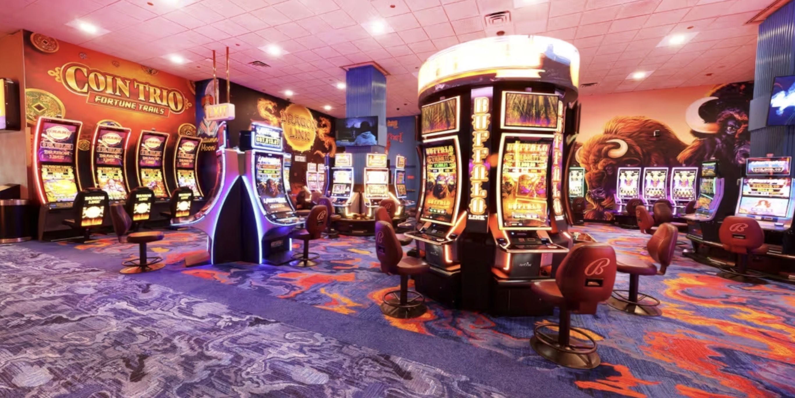
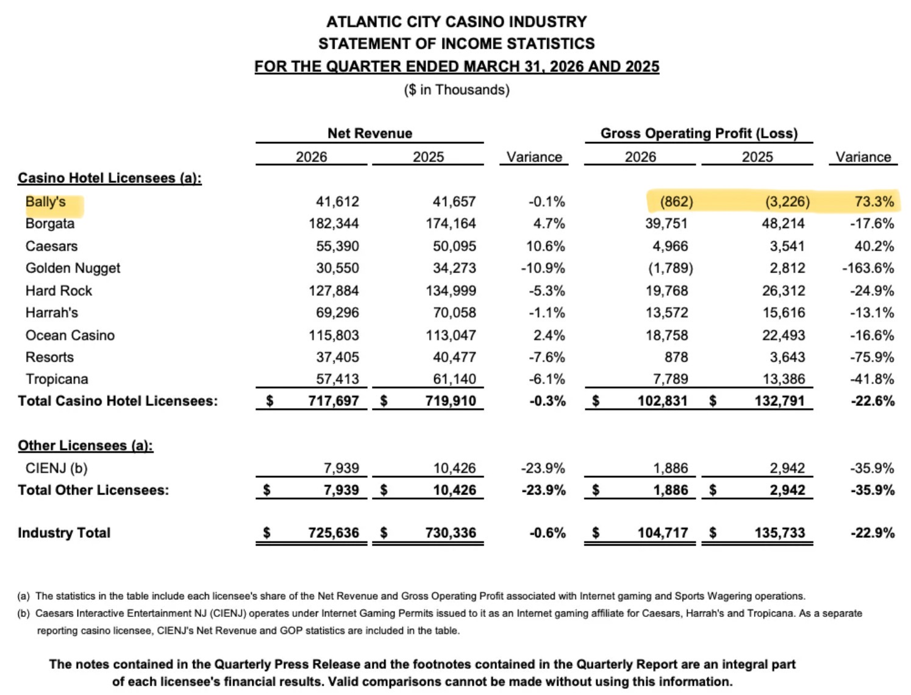

If you asked 100 Atlantic City regulars which is the best casino in town, Bally’s probably wouldn’t get many votes. Best floor? Best restaurants? Best nightlife? Best hotel? Best high-limit room? It’s almost never the answer.
But ask a different question: Which casino gets underestimated the most?
Now Bally’s starts showing up.
And that’s what makes it one of the most interesting properties on the Boardwalk.
Atlantic City has been quietly betting against Bally’s for years. Yet every morning the doors open, the lights come on, the chips hit the felt, and the place keeps going.
In a town that has watched casinos close, rebrand, crash, get rescued, or completely reinvent themselves, Bally’s remains one of the strangest survivors. Not thriving. Not dying. Just enduring.
Every casino here has its own personality.
Borgata is the successful older sibling. Hard Rock is the loud, flashy one everybody notices. Ocean is the comeback kid. Harrah’s is the convention workhorse. Caesars is the big name everyone recognizes. Resorts leans into its history and nostalgia.
Bally’s? It’s the middle child. Not ignored exactly. Not celebrated. Just there.
And honestly, for thousands of players every year, that’s exactly what they want. A casino right in the middle of the Boardwalk. Easy to get to. Easy to walk around. No ridiculous hikes from the parking garage to your room. No massive crowds or pressure to be part of the scene. It’s comfortable.
And comfort is underrated when you really just want to sit down, gamble, have a drink, and enjoy yourself.
The more I think about it, Bally’s fills a role that a lot of casinos overlook.
It’s the reliable everyday option.
It’s not the casino people dream about visiting. It’s not the one that dominates social media or gets people bragging to their friends. But for a lot of players, it quietly gets the job done. You know what you’re getting when you walk in.
Bally’s isn’t flashy. It isn’t trendy. It’s not trying to be a luxury resort. It simply gives you a straightforward casino experience in a really good location. You might not build an entire trip around it, but it usually delivers exactly what you need.
And there are more players looking for that than most casino executives probably realize.
The Bally’s name has been around for nearly a century. It started in Chicago during the 1930s building pinball machines and arcade games. Over the decades it lived through booms, busts, mergers, acquisitions, and ownership changes before becoming today’s Bally’s Corporation.
The Atlantic City property has followed a similar path. It watched the Atlantic Club disappear, Trump Plaza vanish, the old Revel become Ocean, and the Taj Mahal become Hard Rock. Owners came and went. Strategies changed. The market changed.
Bally’s stayed. Not because it dominated. Because it survived.
One of the weirdest things about Bally’s reputation is how good its location actually is. If you were building a casino from scratch, you’d probably pick something very close to where it already sits: directly on the Boardwalk, connected to Caesars, walking distance to Resorts, Hard Rock, and Ocean, with constant foot traffic.
That geography is a big reason it keeps surviving. Unlike the old Atlantic Club at the far end, people are always walking past Bally’s. Sooner or later, some of them walk inside.
A lot of people end up at Bally’s. Fewer specifically choose it.
They walk in while exploring the Boardwalk. Some stay because it’s a convenient Caesars Rewards option. Others use it as a comfortable home base. Many just find themselves there because of the location.
The question Bally’s has never fully answered is simple: How many people wake up and say, “Let’s spend the weekend at Bally’s”?
Convenience gets you through the door. Identity gets you to come back.

Walk through on a typical Saturday afternoon and it’s rarely dead, but rarely packed either. The crowd feels different from Hard Rock, Ocean, or Borgata. You’ll see longtime regulars, slot players settled in for the afternoon, and table players who know exactly where they’re headed — people more interested in gambling than being seen gambling.
The recent upgrades have helped. After more than $100 million in renovations, the rooms look fresher, the floor feels cleaner and more modern, and Phil’s Carousel Bar has become one of the more recognizable spots on the Boardwalk. It’s not luxury. Not cutting edge. Just solid.
And there is definitely a market for solid.

That’s why the first-quarter 2026 results stood out. While the rest of Atlantic City saw profits drop nearly 23% due to rising costs, Bally’s actually improved. Its operating loss shrank from about $3.2 million to roughly $862,000 — a 73% improvement — with revenue basically flat at $41.6 million.
They didn’t get a sudden rush of new players. They simply ran the place better: tighter staffing, smarter promotions, fewer inefficiencies. Nothing flashy. But it worked.
Bally’s biggest strength is also its biggest weakness. It doesn’t inspire strong feelings. Nobody is dying to visit Bally’s, but very few people actively dislike it either.
The real challenge isn’t profitability. It’s identity. Why choose Bally’s over Hard Rock for energy? Over Ocean for something fresh? Over Borgata when you want premium?
It has real strengths — location, convenience, comfort, a gambling-first atmosphere. But those aren’t always things people rush home talking about.
Then again, maybe Bally’s doesn’t need a dramatic reinvention. Maybe it already knows what it is: a reliable, no-frills casino in the middle of the Boardwalk. A place where you can get comfortable and just play.
That may never generate headlines, but it can keep the doors open for a very long time.
Maybe. Maybe not. The truth is probably somewhere in the middle.
It still lost money in the first quarter. New competition from New York could make things tougher. But we’ve been having this same conversation about Bally’s for years, and it’s still here.
In a town where plenty of flashier casinos have disappeared, that kind of persistence deserves respect.
Bally’s isn’t the casino everyone loves. It isn’t the one everyone hates. It’s the one that simply refuses to leave.
And after all these years, that might be the most impressive thing about it.